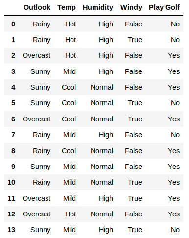
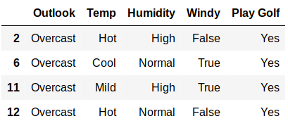
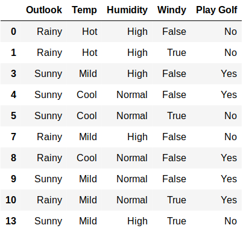

In machine learning and statistics, classification is the problem of identifying to which of a set of categories (sub-populations) a new observation belongs, on the basis of a training set of data containing observations (or instances) whose category membership is known.
Example is assigning a given email to the "spam" or "non-spam" class
An algorithm that implements classification, especially in a concrete implementation, is known as a classifier. The term "classifier" sometimes also refers to the mathematical function, implemented by a classification algorithm, that maps input data to a category.
A decision tree or a classification tree is a tree in which each internal (non-leaf) node is labeled with an input feature.Each leaf of the tree is labeled with a class or a probability distribution over the classes(output)
Decision tree classifier try to build tree by split data based on different conditions. Its goal is to predict target class by learning simple decision rules inferred from the data features.
There are many specific decision-tree algorithms. Notable ones include:
Algorithms for constructing decision trees usually work top-down, by choosing a variable at each step that best splits the set of items.Different algorithms use different metrics
These generally measure the homogeneity of the target variable within the subsets.
Metrics
Information gain
Information gain is based on the concept of entropy.
Entropy is defined as below
Entropy
Entropy H ( S ) is a measure of the amount of uncertainty in the (data) set S.
Where,
Information gain
Information gain I G ( A ) is the measure of the difference in entropy from before to after the set S is split on an attribute A. In other words, how much uncertainty in S was reduced after splitting set S on attribute A.
Where,
Example
Here we are taking play golf dataset
Entropy of entire dataset(Play Golf) from the above formula
there are two classes(Yes, No)
| Play Golf | |
|---|---|
| Yes | No |
| 9 | 5 |
H(play golf) = -(5/(5+9))* log2(5/(5+9))-(9/(5+9))* log2(9/(5+9))
H(play golf) = 0.53 + 0.41
H(play golf) = 0.94
Entropy of Outlook
Entropy(Play Golf, Outlook)
= P(Rainy)*H(2,3)+P(Overcast)*H(4,0)+P(Sunny)*H(3,2)
= 0.693
Information Gain
After splitting dataset with outlook attribute information gain is
IG(Outlook) = H(Play Golf) - H(Play Golf, Outlook)
= .94 - 0.69
= 0.24
The information gain for other three attributes are:
IG(Temp) = H(Play Golf) - H(Play Golf, Temp)
= .94 - 0.911
= 0.029
IG(Humidity) = H(Play Golf) - H(Play Golf, Humidity)
= .094 - 0.788
= 0.152
IG(Windy) = H(Play Golf) - H(Play Golf, Windy)
= .094 - 0.892
= 0.048
from the above four attributes Outlook is having the highest information gain so split the dataset by using outlook attibute
and the process will continue until all children nodes are pure, or until the information gain is 0
After spliting dataset into two parts with Outlook
first part will be

this is leaf node because it is pure node(contains all yes) or information gain is zero so we should not split it further
second part will be

this is not pure node we need to split again
if we compute information gain after splitting with four features respective information gains are:
IG(Outlook) = -0.030
IG(Temp) = 0.179
IG(Humidity) = 0.218
IG(Windy) = 0.065
Here splitting with Humidity giving highest information gain so split with Humidity. repeate the same process till all nodes are pure